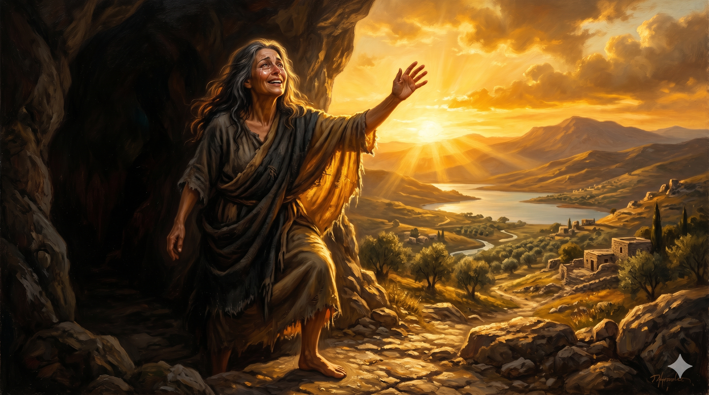
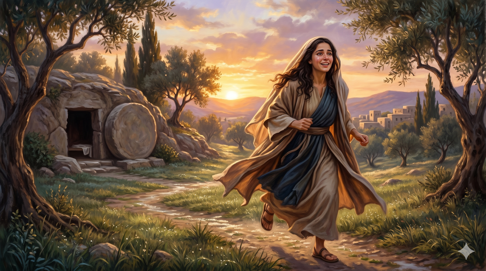

어둠 속에서 빛을 향해 나아오는 한 여인 — 일곱 귀신의 속박에서 시작하여 부활의 첫 증인으로 서기까지, 막달라 마리아의 여정 전체를 담은 상징적 장면
"그 중에는 일곱 귀신이 나간 자 막달라인이라 하는 마리아와"
"예수께서 이르시되 나를 붙들지 말라 내가 아직 아버지께로 올라가지 아니하였노라 너는 내 형제들에게 가서 이르되 내가 내 아버지 곧 너희 아버지, 내 하나님 곧 너희 하나님께로 올라간다 하라 하시니 막달라 마리아가 가서 제자들에게 내가 주를 보았다 하고 또 주께서 자기에게 이런 말씀을 하셨다 이르니라"
— 누가복음 8:2; 요한복음 20:17-18
막달라 마리아의 이야기를 처음부터 끝까지 한 호흡으로 돌아보면, 거기에는 성경 전체에서 가장 극적인 은혜의 반전이 담겨 있습니다. 그녀의 출발점은 "일곱 귀신이 나간 자"였습니다(눅 8:2). 숫자 일곱은 유대 전통에서 완전수이자 극한을 가리킵니다. 즉 그녀는 가장 심각한 영적 속박과 고통 속에 있었습니다. 그 어떤 인간적 방법으로도 회복될 수 없어 보였던 존재, 그것이 예수님을 만나기 전의 막달라 마리아였습니다. 그러나 예수님은 그녀를 찾아오셨고, 말씀 한마디로 그 사슬을 끊으셨습니다. 은혜는 가장 어두운 곳에서 시작됩니다.
그리고 그 여정의 끝에서 마리아는 부활하신 주님으로부터 인류 역사상 가장 영광스러운 사명 하나를 받습니다. "가서 내 형제들에게 이르라"(요 20:17). 죄인도, 창녀도, 숨겨진 조연도 아닌 — 부활을 가장 먼저 목격하고, 제자들에게 그 소식을 전하는 첫 번째 사도. 초대 교부들이 그녀를 "Apostola Apostolorum", 곧 사도들의 사도라 부른 것은 과장이 아니었습니다. 일곱 귀신에서 사도들의 사도로. 인간의 눈에 가장 보잘것없어 보이던 시작에서 역사상 가장 중요한 소식을 전하는 자리로. 이것이 하나님 은혜의 수학이며, 복음이 말하는 완전한 반전입니다.

새벽빛 속에서 "내가 주를 보았다!"고 외치며 제자들에게 달려가는 막달라 마리아 — 부활의 증인이 된 그녀의 얼굴에는 두려움과 기쁨이 동시에 넘칩니다
막달라 마리아의 삶은 우리에게 이렇게 말합니다. 당신의 시작이 어땠는지는 중요하지 않습니다. 예수님을 만난 이후가 중요합니다. 혹시 지금 자신의 과거, 실패, 상처 때문에 "나는 도저히 쓰임받을 수 없는 사람"이라고 생각하십니까? 막달라 마리아의 출발점을 기억하십시오. 하나님은 가장 깊은 속박에 있던 그녀를 선택하셔서 가장 중요한 사명을 맡기셨습니다. 하나님의 은혜는 인간의 자격 기준을 초월합니다. 그분이 당신을 택하셨다면, 당신의 배경은 장애물이 아니라 하나님의 영광을 더 크게 나타낼 도구가 됩니다.
또한 마리아가 보여 준 한 가지 결정적인 태도를 기억하십시오. 그녀는 끝까지 자리를 지켰습니다. 골고다에서, 무덤 앞에서, 그리고 이른 새벽 텅 빈 무덤 앞에서. 이해되지 않아도, 두려워도, 모든 것이 끝난 것처럼 보여도 — 그녀는 떠나지 않았습니다. 그 자리를 지킨 사람에게 주님은 나타나셨습니다. 오늘 우리가 해야 할 일도 같습니다. 포기하지 않고, 기도의 자리를, 말씀의 자리를, 예배의 자리를 지키는 것. 그 자리에 주님이 찾아오십니다.
일곱 귀신이 당신의 시작이었어도 괜찮습니다.
예수님을 만난 사람의 결말은 하나님이 쓰십니다.
가장 깊은 속박에서 가장 영광스러운 증인으로 — 그것이 복음의 반전입니다.